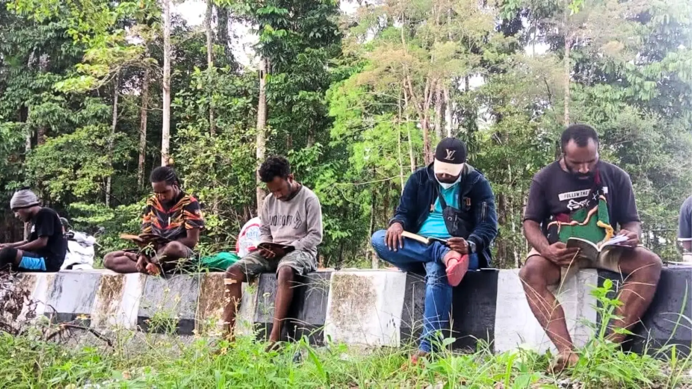
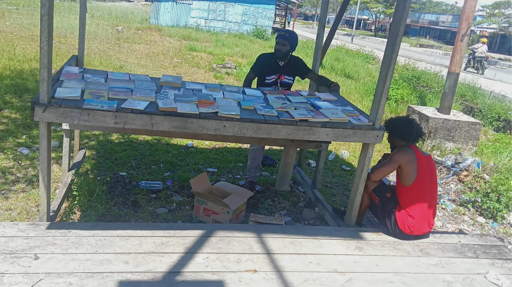
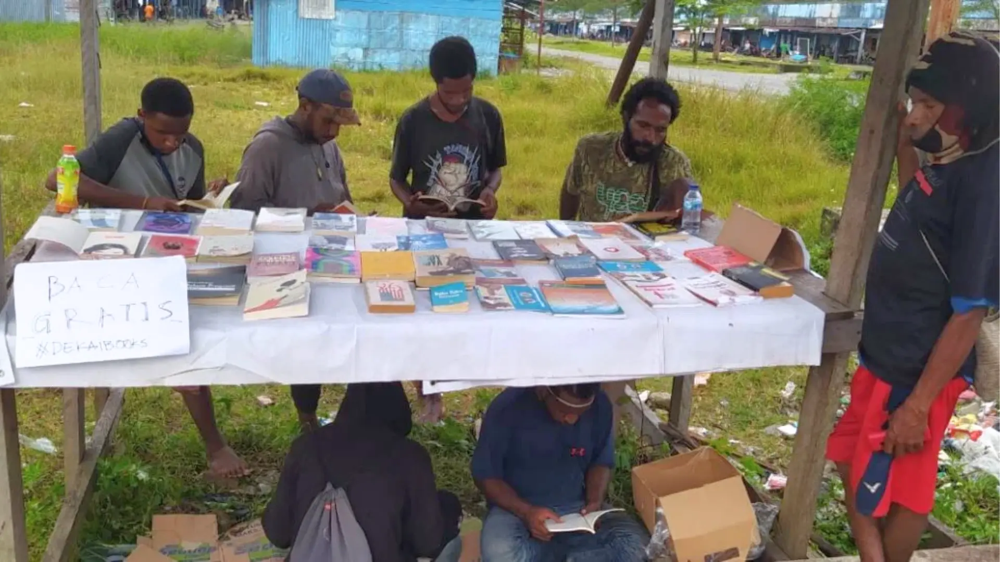
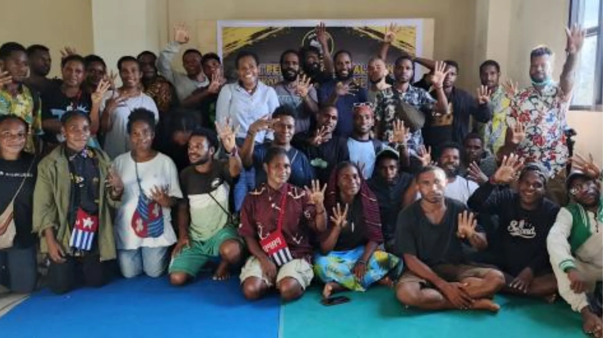

Donasi Buku & Dana
Dekai Books berjalan dari dukungan bersama. Jika Anda ingin menyumbangkan buku, bahan bacaan, atau dana untuk keberlangsungan lapak baca dan program lainnya, silakan hubungi kami langsung melalui WhatsApp.
Hubungi via WhatsApp →Gerakan Literasi
dan Perpustakaan Jalanan
“Belajar, Bertumbuh, Membumi”
Dekai Books didirikan pada 20 Maret 2020 di Kontrakan Putri Yahukimo, Yogyakarta, oleh anak-anak muda Yahukimo.
Gerakan ini lahir dari keresahan terhadap keterbatasan akses buku dan perpustakaan di Yahukimo.
Dari keresahan itu, Dekai Books mulai menjalankan perpustakaan jalanan pertama di pertigaan Pangkalan Cendrawasih.
Sejak saat itu, Dekai Books menjadi wadah untuk berkumpul, berdiskusi, menemukan masalah, merumuskan masalah, dan mencari solusi, sembari terus mengembangkan pendidikan, kebudayaan, riset, dan penelitian di Yahukimo.
Akses terhadap buku dan perpustakaan yang terbatas di Yahukimo menjadi salah satu keresahan yang melahirkan gerakan Dekai Books.
2 kali dalam seminggu
Lapak baca dilakukan di ruang terbuka dan menyediakan buku bagi siapa saja yang datang untuk membaca.
Kegiatan ini berkembang hingga ke Kompleks Sekla, Jln. Gunung, selain di lokasi awal di pertigaan Pangkalan Cendrawasih.
Kegiatan membaca dilakukan dua kali dalam seminggu, termasuk di dalamnya kegiatan diskusi dan membaca bersama.
Dokumentasi kegiatan dapat dilihat di Instagram @dekaibooks.
Jejak lapak baca dan kegiatan Dekai Books. Dokumentasi lengkap tersimpan di Instagram @dekaibooks.
Sejumlah liputan media tentang perjalanan Dekai Books.




Dekai Books berjalan dari dukungan bersama. Jika Anda ingin menyumbangkan buku, bahan bacaan, atau dana untuk keberlangsungan lapak baca dan program lainnya, silakan hubungi kami langsung melalui WhatsApp.
Hubungi via WhatsApp →Kami membuka ruang bagi siapa saja yang ingin turut serta menjaga lapak baca, mendampingi kegiatan membaca, atau terlibat dalam riset dan pendokumentasian budaya di Yahukimo.
Hubungi via WhatsApp →